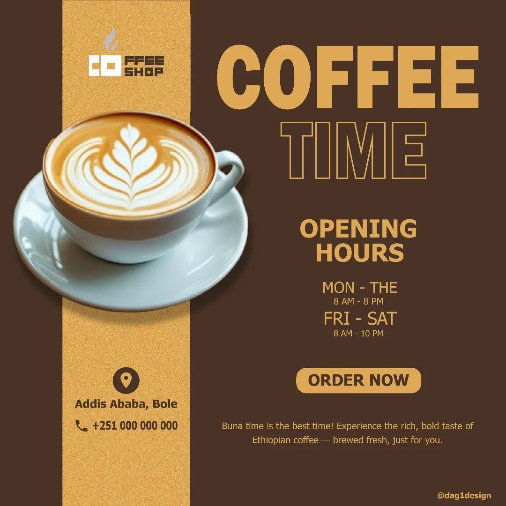
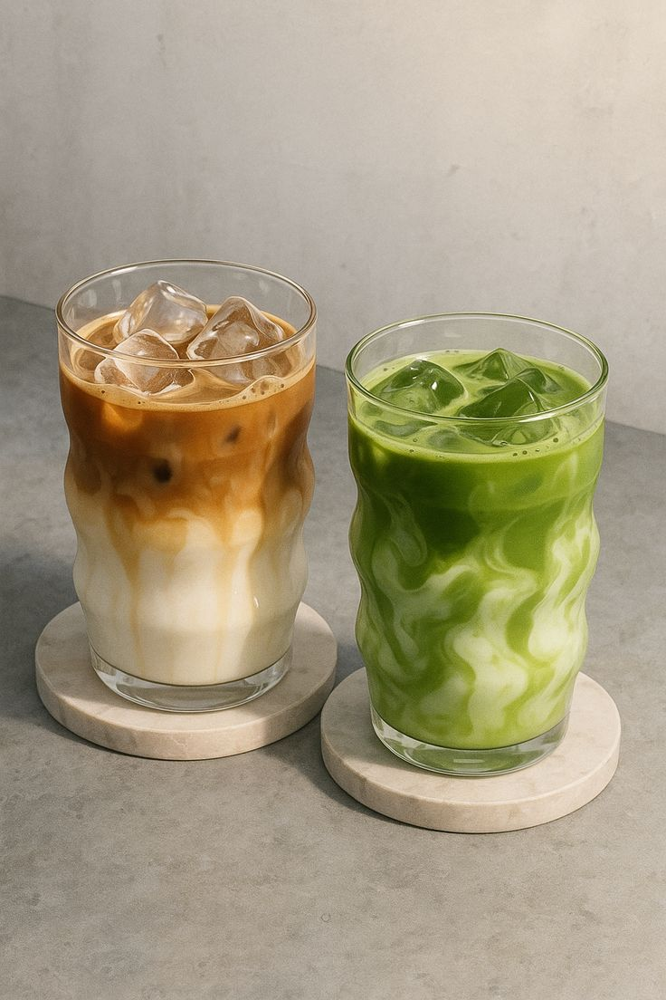
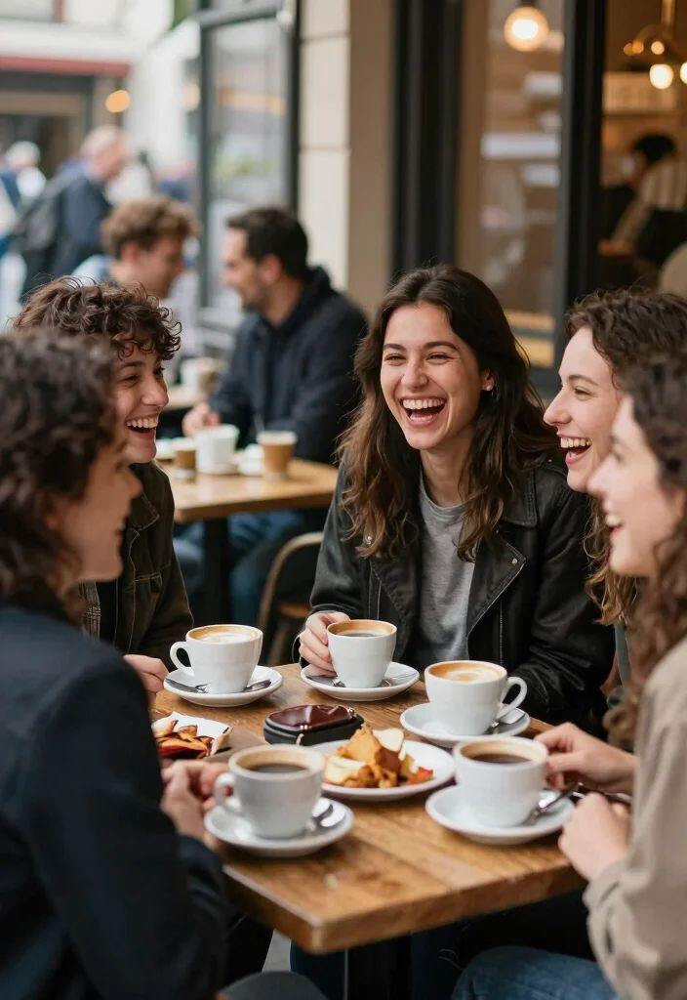
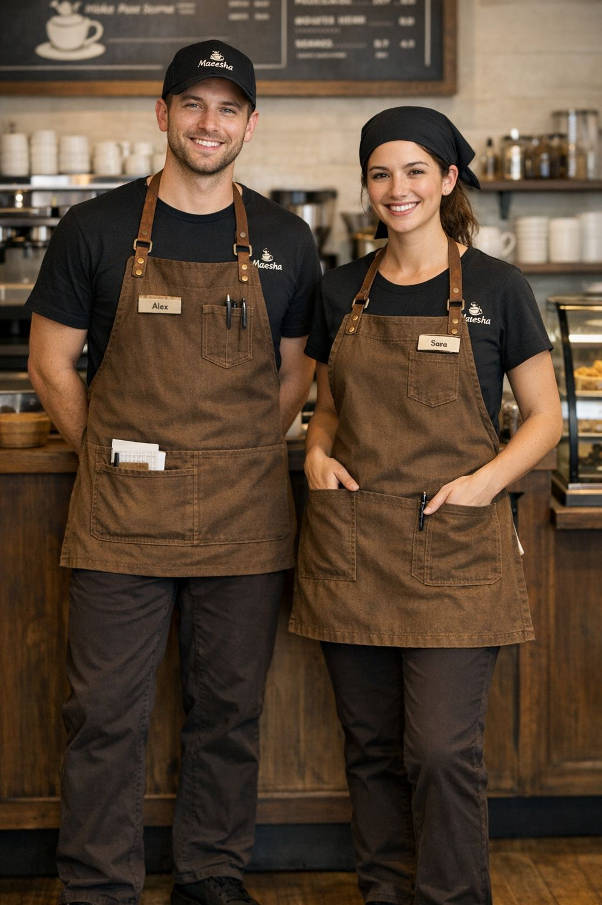
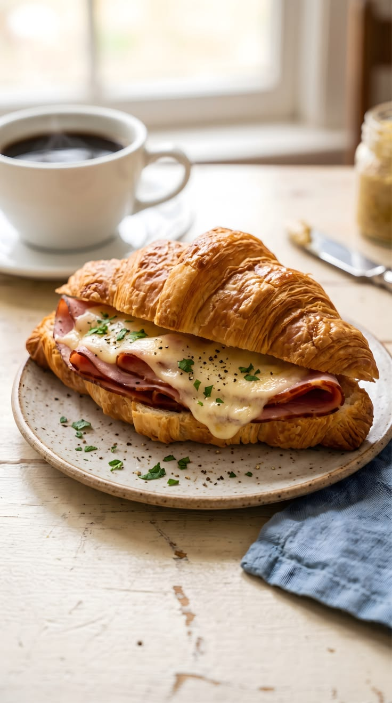
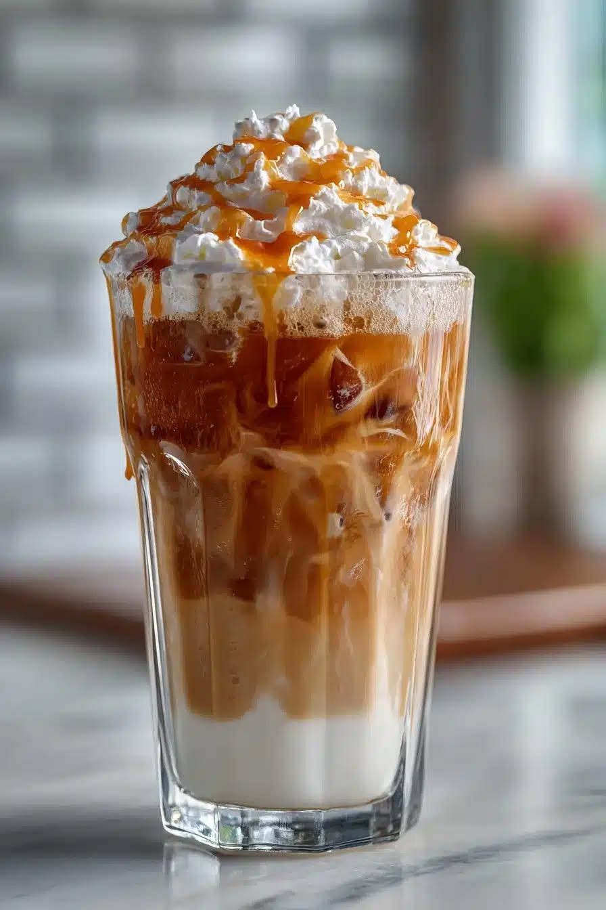
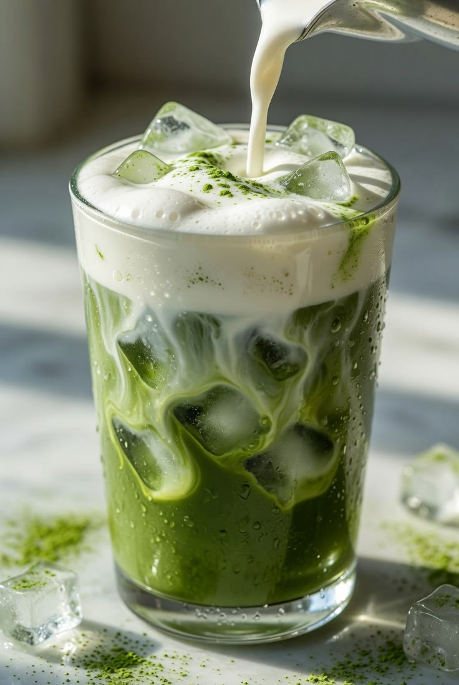
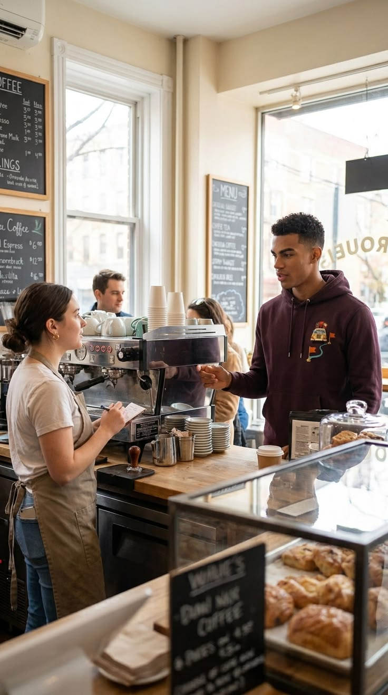

Welcome to Café de L'Or,where carefully crafted coffee, fresh flavors, and genuine hospitality come together to create moments you'll want to return to.
Join us Monday to Friday from 7:00 AM to 9:00 PM, Saturday from 8:00 AM to 10:00 PM, and Sunday from 8:00 AM to 8:00 PM.

At Café de L'Or, every item on our menu is prepared with care using quality ingredients and freshly roasted coffee beans.
Whether you're craving a rich espresso, a creamy latte, or a delicious pastry, there's something to satisfy every
taste.

We believe every visit should be more than just a coffee break. From the moment you walk in, you'll enjoy exceptional flavors, a welcoming atmosphere, and service that makes every experience memorable.

Café de L'Or was created to offer more than just great coffee,it was built to create meaningful moments.
Every cup is crafted from carefully selected beans, delivering rich flavors and exceptional quality in every sip.
Our menu features
freshly prepared beverages, pastries, and light meals made to satisfy every craving.
Whether you're meeting friends, catching up on work, or simply taking a quiet break, our welcoming space is designed for comfort and connection.
We believe that great coffee brings people together and turns everyday moments into lasting memories.
At Café de L'Or, every guest is welcomed with warmth, care, and a passion for excellence.




